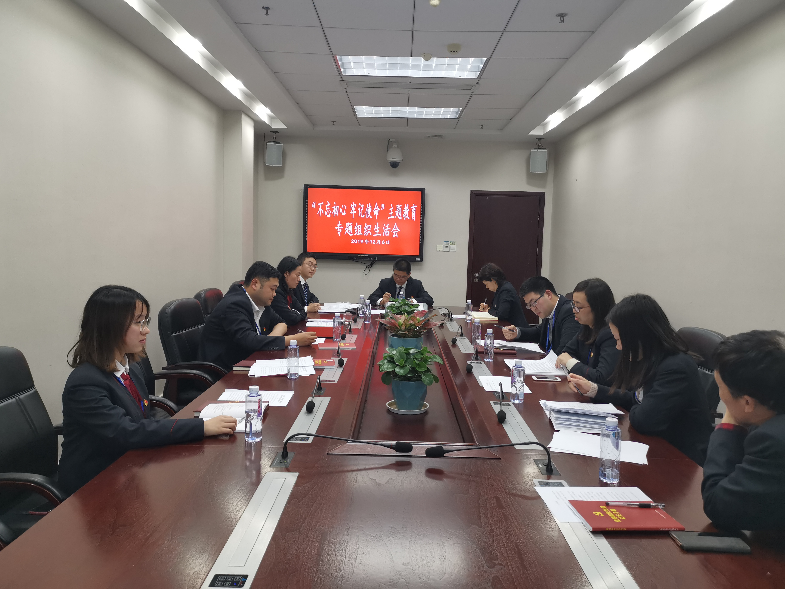

【信息发布时间：2019-12-09阅读次数：】 【我要打印】 【关闭】
12月6日，中共苏州市公共资源交易中心张家港分中心党支部召开“不忘初心、牢记使命”主题教育专题组织生活会，支部全体党员参加了此次会议。
组织生活会紧扣学习贯彻习近平新时代中国特色社会主义思想这一主线，聚焦“不忘初心、牢记使命”这一主题，紧紧围绕“守初心、担使命，找差距、抓落实”总要求，坚持将学习教育、调查研究、检视问题、整改落实有机融合、贯穿始终，推动主题教育落实落地。
会上，支部对上年度组织生活会整改落实情况进行了通报，并从学习贯彻十九届四中全会精神、组织开展主题教育、严格党员教育管理、联系服务群众、改进工作作风等五个方面，深入查摆班子存在问题，剖析问题根源，明确整改措施。随后，支部党员逐一深入开展批评和自我批评，勇思己过，实论是非，对党员干部个人存在问题和不足进行检视指正。
党支部书记顾一武最后强调： 全体党员干部要持续加强理论学习，不断巩固深化主题教育成果；要加强党建引领，持续推动主题教育不断向实处着力、向深处拓展；要坚持中心“三引领一率先”的奋斗目标，聚焦公共资源交易县域营商环境优化、标准化建设、全流程不见面交易，率先打造全省智慧型智能化公共资源交易场所，为推进新时代“三超一争”奠定坚实基础。
